Validation of optimization
of LSTM RNN on Paris traffic
The machine has to learn a 288 steps x 2081 features data-set.
Validation is done as mse of the mean value of the features (red prediction, blue real). The shown hyperparameters are: epochs, hidden dimensions (vertical), window size (horizontal).
Take home
1. 3000 epochs and the learning already saturated
2. horizontally, predicted signal amplitude is inverse to window size
3. vertically, hidden dimension scales the signal
Hence..
Points 2 and 3 are weird, they imply that with the wrong hyperparameters a model
can not fit a given data-set. Note that I only studied 2 out of ~10 hyperparameters.
On the bright side of life we get that
the current good paramters are very small, meaning that we can train 1e5 epochs in ~6 minutes.
| hidden dim \ window |
2 |
6
|
12 |
| 32 |
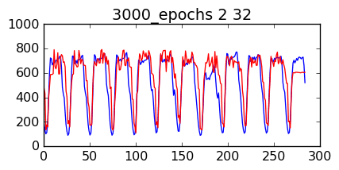 |
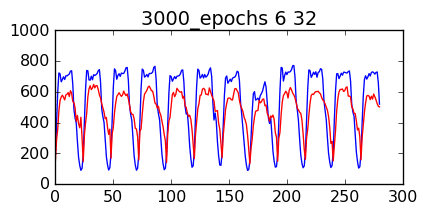 |
 |
| 64 |
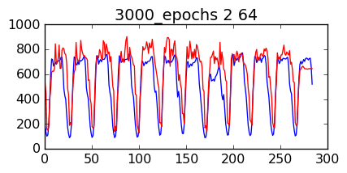 |
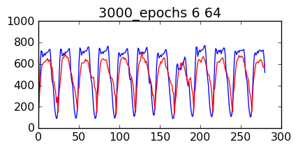 |
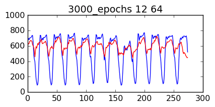 |
| 128 |
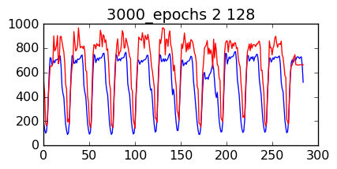 |
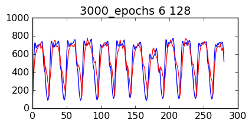 |
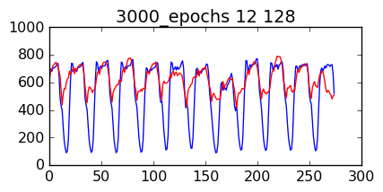 |
| 512 |
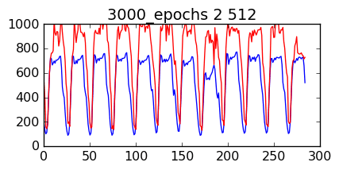 |
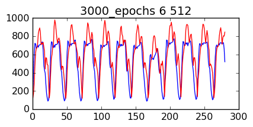 |
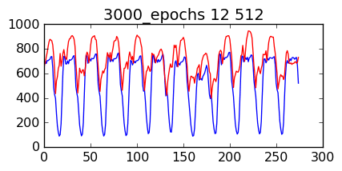 |
| 1024 |
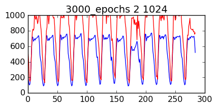 |
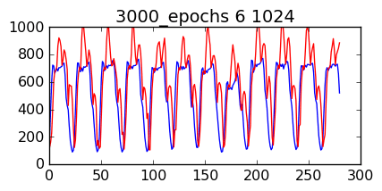 |
 |